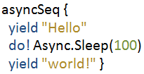

Programming with F# asynchronous sequences
In F#, we can represent asynchronous operations that do not block threads and eventually
return a value of type 'T using asynchronous workflows Async<'T>.
Asynchronous workflows can be easily constructed using the computation expression syntax
async { ... } and there are also a few combinators that express more advanced
composition (such as parallel composition or fork-join parallelism).
Sometimes, we need to use asynchronous operations that return more than just one value. For example, when downloading data from the internet, we would like to create an asynchronous sequence that returns the data in chunks as they become available.
One way to represent asynchronous operations that produce multiple values is to use
the IObservable<'T> type from .NET. This isn't always the best option
though. Observables implement push-based model, which means that chunks of data are
generated as quickly as possible (until all chunks are emitted). What if we wanted to take
the chunks one-by-one after the previous chunk is processed?
In this article, I describe asynchronous sequences. An asynchronous sequence is a simple, yet very powerful concept based on asynchronous workflows. It follows the same core model: results are generated on demand and asynchronously. Unlike asynchronous workflows, asynchronous sequences can be called (on demand) to generate multiple values until the end of the sequence is reached.
I first discussed asynchronous sequences with Don Syme, Dmitry Lomov and Brian McNamara in an email thread a long time ago. Thanks to Don for enthusiasm about the concept and for the first implementation of some of the combinators!
Introducing asynchronous sequences
Asynchronous sequences that emit values of type 'T are represented by a type
AsyncSeq<'T>. The type is surprisignly simple. It follows the same pattern
as the definition of standard F# list or a LazyList<'T> type from F#
PowerPack:
1: /// Asynchronous computation that produces either end of a sequence 2: /// (Nil) or the next value together with the rest of the sequence. 3: type AsyncSeq<'T> = Async<AsyncSeqInner<'T>> 4: and AsyncSeqInner<'T> = 5: | Nil 6: | Cons of 'T * AsyncSeq<'T>
An asynchronous sequence is an asynchronous computation. When started, it eventually produces
a value of type AsyncSeqInner<'T>. The generated value is either Nil
representing the end of the sequence or Cons carrying a value together with the
tail of the sequence. The tail is again an asynchronous sequence - it can be started to
get the next element of the sequence (if there are any) or it can be disposed if we don't need any
further elements. To summarize - when programming with asynchronous sequences, the consumer is
in control of the evaluation:
- When using
AsyncSeq<'T>, we can pull elements from the sequence (although the pull operation is asynchronous and may take some time before it completes). This approach is more suitable if the source that generates the values can be controlled - for example, we can ask a web crawler for a next bulk of pages or we can ask a source that reads file for the next 1kB of data. - On the other hand, sources that cannot be controlled (such as clicks in the user-interface or
incomming messages) are better represented using
IObservable<'T>.
There are some ways of converting between these two models, but we'll discuss that later.
First, let's take a look at some examples. Creating values of type AsyncSeq<'T>
directly would be a bit cumbersome. Fortunately, we can use the computation expression syntax...
Creating asynchronous sequences
The code to create asynchronous sequence is very similar to standard F# asynchronous workflows.
The only difference is that asynchronous sequence can return multiple values using the
yield keyword. The following snippet creates a simple asynchronous sequence.
When started, it returns 1 after 1 second. When the returned tail is started,
it returns 2 after 1 more second. Finally, starting the newly returned tail will return
Nil immediately:
1: // When accessed, generates numbers 1 and 2. The number 2: // is returned 1 second after value is requested. 3: let oneTwo = asyncSeq { 4: do! Async.Sleep(1000) 5: yield 1 6: do! Async.Sleep(1000) 7: yield 2 }
The asyncSeq { .. } block can contain the usual syntax of asynchronous workflows.
In the example above, we use do! together with the standard Async.Sleep
member to pause the asynchronous sequence for 1 second.
This example shows that asynchronous sequences fit naturally extremely well with
asynchronous workflows. This is possible because the right-hand-side of let!
and do! is of type Async<'T> as opposed to AsyncSeq<'T>
(which would be the case for a usual monad).
To can get a better understanding of what syntax is allowed inside the asyncSeq { .. }
block, let's look at the type signature of the AsyncSeqBuilder computation builder.
The listing omits some members (for exception handling and while loop), but it shows
the essence of asynchronous sequences:
1: type AsyncSeqBuilder = 2: // Waits for the result of a single asynchronous 3: // operation and then continues generating the sequence 4: member Bind : Async<'T> * ('T -> AsyncSeq<'U>) -> AsyncSeq<'U> 5: 6: // For every element of the input (asynchronous) sequence, 7: // yield all elements generated by the body of the for loop 8: member For : AsyncSeq<'T> * ('T -> AsyncSeq<'TResult>) -> AsyncSeq<'TResult> 9: member For : seq<'T> * ('T -> AsyncSeq<'TResult>) -> AsyncSeq<'TResult> 10: 11: // Yield single/zero elements and concatenation of sequences 12: member Yield : 'T -> AsyncSeq<'T> 13: member Zero : unit -> AsyncSeq<'T> 14: member Combine : AsyncSeq<'T> * AsyncSeq<'T> -> AsyncSeq<'T> 15: 16: type Microsoft.FSharp.Control.AsyncBuilder with 17: // For every element of the input asynchronous sequence, 18: // perform the specified asynchronous workflow 19: member For : AsyncSeq<'T> * ('T -> Async<unit>) -> Async<unit>
As already mentioned, the Bind operation is unusual, because it takes
Async<'T>. It creates an asynchronous sequence that starts the workflow,
then calls the specified function and then continues yielding elements using the generated
asynchronous sequence.
If we want to create an asynchronous sequence that uses all elements of another
asynchronous sequence, we need to use the for syntax (you'll find some
examples in the next section). This is similar to how usual sequence expressions
work. When you want to return all elements of some other sequence, you can write
for loop containing yield. Alternatively, you can also write
yield!, which is also supported for asynchronous sequences. The definition
uses overloading, so it allows iterating over both synchronous and asynchronous sequences.
The listing also adds an overloaded For member to the computation builder for
standard F# asynchronous workflows (the AsyncBuilder type). This allows us to
easily consume an asynchronous sequence (I'll explain how this work when we look at an example
later).
Downloading web pages sequentially
To get started with asynchronous sequences, the following example creates a computation that downloads a list of web pages a and returns their URL together with the size of the downloaded HTML content. The web pages are not downloaded in parallel - we start downloading the next page only after the previous one was downloaded and consumed by the caller.
If the list contained millions of URLs and the caller only needed the first three, we wouldn't want to waste all our bandwidth. However, it may be a good idea to process a few pages in advance and store them in some buffer - this can be easily done and you can find examples in the source code at the end of this article.
1: let urls = 2: [ "http://bing.com"; "http://yahoo.com"; 3: "http://google.com"; "http://msn.com" ] 4: 5: // Asynchronous sequence that returns URLs and lengths 6: // of the downloaded HTML. Web pages from a given list 7: // are downloaded asynchronously in sequence. 8: let pages = asyncSeq { 9: use wc = new WebClient() 10: for url in urls do 11: try 12: let! html = wc.AsyncDownloadString(Uri(url)) 13: yield url, html.Length 14: with _ -> 15: yield url, -1 }
The asyncSeq { .. } block iterates over a (synchronous) list of URLs using a for
loop. The body of the loop is an asynchronous sequence. We use try .. with to handle
exceptions that may occur when evaluating the computation. Inside the exception handler, we download
a single page and return its URL and size. If an exception occurs, the URL is still returned, but
with -1 as the size.
Now that we have an asynchronous sequence, let's look how to consume it. The elements of the sequence
are evaluated asynchronously, which may take a long time, so we need to use async { .. }
to avoid blocking threads (the type AsyncSeq<'T> does not implement the
seq<'T> interface):
1: // Asynchronous workflow that prints results 2: async { 3: for url, length in pages do 4: printfn "%s (%d)" url length } 5: |> Async.Start
This snippet uses the overloaded for loop that is added to the standard
F# asynchronous workflow (as discussed earlier). When evaluating the loop, the workflow
calls the AsyncSeq<'T> value to get the first element and a tail. Then
it evaluates the body of the for loop (which is itself asynchronous and may
take some time). When the body completes, the for loop calls the AsyncSeq<'T>
that was returned previously as a tail.
This means that the elements of asynchronous sequence are generated on-demand. As with standard F# async workflows, there is no implicit parallelism. Parallelising a program is a separate concern and it can be easily done using a combinator that creates an asynchronous sequence that evaluates certain number of elements in advance and keeps them in a buffer.
In the above example, the body simply prints the element generated by the sequence and then immediately asks for the next element, so there is no room (or need) for parallelism.
Processing asynchronous sequences
The previous section demonstrated how to create asynchronous sequences explicitly using the
asyncSeq { .. } computation builder. This is similar to constructing ordinary
sequences using the seq { .. } notation. Once we have an asynchronous sequence,
we can process it using several useful higher-order functions that implement filtering, projection
and other useful operation. Many of the functions from the Seq module can be
provided for asynchronous sequences too.
The following example demonstrates several of combinators. It takes the pages asynchronous
sequence from the previous section and gets URLs of pages that are larger than 50kB. Then it
prints the URLs to the console:
1: // Print URL of pages that are smaller than 50k 2: let printPages = 3: pages 4: |> AsyncSeq.filter (fun (_, len) -> len < 50000) 5: |> AsyncSeq.map fst 6: |> AsyncSeq.iter (printfn "%s") 7: 8: printPages |> Async.Start
In this example, the functions used as arguments to filter, map and iter
are synchronous functions that complete immediately. As you can see using the tool tips,
the type of map and filter is what you would expect - they take
AsyncSeq<'T> and return another AsyncSeq<'R>. The type
of iter is more interesting. It returns Async<unti>, so we can
execute the operation in an asynchronous workflow and wait until the iteration is completed
(This is the same behavior as Seq.iter, but it differs from similar operation
for IObservable<'T> - the Observable.add function returns
immediately.)
The complete library (available at the end of the article) also provides asynchronous versions of
most of the operations. For example, if the input asynchronous sequence contained just URLs, we would
need to (asynchronously) download the web page and then test whether the length is less than 50kB.
This could be done using filterAsync, which is similar to filter with the
only difference that the predicate (given as the first argument) is asynchronous function.
Combinators such as filter and filterAsync are very easy to implement
using the asyncSeq computation builder:
1: /// Return elements for which the predicate returns true 2: let filter f (input : AsyncSeq<'T>) = asyncSeq { 3: for v in input do 4: if f v then yield v } 5: 6: /// Return elements for which the asynchronous predicate returns true 7: let filterAsync f (input : AsyncSeq<'T>) = asyncSeq { 8: for v in input do 9: let! b = f v 10: if b then yield v }
The two functions demonstrate a great aspect of the programming model based on asynchronous
sequences. We can reuse many of the standard patterns that are useful when working with either
normal sequence expressions or when using asynchronous workflows. The definition
of filter is essentially the same as what you'd write when implementing Seq.filter.
In these examples, the asyncSeq { .. } block contains an asynchronous for loop
that iterates over another asynchronous sequence. In the body, it yields it performs some operation.
In the second case, the operation is performed asynchronously using let!. When it completes,
the body (optionally) uses yield to generate the next value.
When the consumer of the sequence returned by filter or filterAsync requests
the next element, the sequence resumes, asks the input sequence for the next element
and loops until it finds an element matching the predicate.
I will not discuss all combinators that are implemented in the AsyncSeq module. In general,
the module implements most of the functionality that is available in the standard Seq module
(and each function is well documented). However, the following listing shows a few declarations of
interesting and useful functions:
1: // Aggregate all elements of async sequence using async function 2: // and return the result (as an asynchronous workflow) 3: val foldAsync : ('S -> 'T -> Async<'S>) -> 'S -> AsyncSeq<'T> -> Async<'S> 4: 5: // Aggregate elements and yield immediate results as an async sequence 6: // (The input is accessed lazily as the result sequence is evaluated) 7: val scanAsync : ('S -> 'T -> Async<'S>) -> 'S -> AsyncSeq<'T> -> AsyncSeq<'S> 8: 9: // Same as previous functions, but the aggregating function is synchronous 10: val fold : ('S -> 'T -> 'S) -> 'S -> AsyncSeq<'T> -> Async<'S> 11: val scan : ('S -> 'T -> 'S) -> 'S -> AsyncSeq<'T> -> AsyncSeq<'S> 12: 13: // Synchronous and asynchronous version of a function that returns 14: // elements of the input sequence (lazily) while a predicate holds 15: val takeWhileAsync : ('T -> Async<bool>) -> AsyncSeq<'T> -> AsyncSeq<'T> 16: val takeWhile : ('T -> bool) -> AsyncSeq<'T> -> AsyncSeq<'T>
Two very useful functions in functional programming are fold and scan. In our setting,
fold aggregates an asynchronous sequence using the specified function and returns an asynchronous
workflow that produces the aggregate when the asynchronous sequence ends. The scan function is similar,
but it generates an asynchronous sequence of immediate results. As you can see, there are two versions of both
functions: one that uses synchronous and one that uses asynchronous aggregation function.
Implementing sequential web crawler
Web crawlers are popular examples when demonstrating asynchronous programming in F#, so I'll use the same problem to implement a larger example based on asynchronous sequences. The usual web crawler examples in F# demonstrate that you can easily run a large number of asynchronous operations in parallel. This example focuses on something else:
- We use asynchronous sequence to control the web crawler. The crawler continues processing only when the consumer is ready to handle the next value. This means that asynchronous sequences give the caller a way to control the source.
- The code that consumes pages produced by the crawler uses just the
AsyncSeq<'T>interface and it can use the functions designed for working with it without knowing how the crawler works. This means that asynchronous sequences are a useful abstraction representing asynchronously produced values.
The crawler in this simple exeample is fully sequential - it downloads a single page, passes it to the consumer and then waits until the consumer asks for the next page. We could improve the crawler by downloading several pages in advance (in parallel) and storing them in a buffer. You can find this feature in the complete source code at the end of the article. The important point is that the caller can still control the crawler and can still use the unified interface.
The following snippet implements a function randomCrawl that takes an initial URL and then
continues crawling from this URL. It is implemented using a recursive loop function. If it
reaches a page that was not visited before, it returns the URL together with an extracted title and then
recursively visits all pages referenced from the current document. The code following yield
will be executed only after the consumer processes the first value and asks for another:
1: /// Crawl the internet starting from the specified page. 2: /// From each page follow the first not-yet-visited page. 3: let rec randomCrawl url = 4: let visited = new System.Collections.Generic.HashSet<_>() 5: 6: // Visits page and then recursively visits all referenced pages 7: let rec loop url = asyncSeq { 8: if visited.Add(url) then 9: let! doc = downloadDocument url 10: match doc with 11: | Some doc -> 12: // Yield url and title as the next element 13: yield url, getTitle doc 14: // For every link, yield all referenced pages too 15: for link in extractLinks doc do 16: yield! loop link 17: | _ -> () } 18: loop url
The main function in the snippet is written as an ordinary function. It initializes
a HashMap<string> for keeping a set of visited URLs. There is no
parallelism in the example, so we can use a collection that is not thread-safe. Next, the
function declares an inner function loop that returns an asynchronous sequence
and calls it with an initial URL as the argument.
Inside the loop function, we first test if the URL was already visited. If yes,
the asynchronous sequence immediately ends (returning Nil). Otherwise, it
asynchronously downloads the page and, if it succeeds, returns its URL and title.
After yield, it iterates over all links and returns all pages (asynchronously)
generated by recursive calls to loop.
Once we created randomCrawl, we can start using the crawler to implement some
interesting functionality. For example, the following snippet takes first 10 pages that
are referenced from Bing News and are on another domain:
1: // Use AsyncSeq combinators to print the titles of the first 10 2: // web sites that are from other domains than bing.com 3: randomCrawl "http://news.bing.com" 4: |> AsyncSeq.filter (fun (url, title) -> url.Contains("bing.com") |> not) 5: |> AsyncSeq.map snd 6: |> AsyncSeq.take 10 7: |> AsyncSeq.iter (printfn "%s") 8: |> Async.Start
Implementing the processing using AsyncSeq combinators is quite straightforward.
At the end, we use AsyncSeq.iter to perform some action with the results and
then start the returned asynchronous workflow using Async.Start.
It is worth repeating that the asynchronous sequence programming model allows us
to control the crawler easily. When we use AsyncSeq.take to take the first
10 pages, it means that the crawler will stop after we consume the 10 pages. If we created
the crawler differently (e.g. as an agent or an asynchronous workflow that writes to some
thread-safe collection), we would have to program this functionality explicitly. This would
be done using some control message (for agents), a global variable or a cancellation token.
In any case, doing the same thing using asynchronous sequences is notably easier.
Exploring other applications
This article is just a brief introduction to programming with asynchronous sequences. I'll discuss some other interesting applications in the future and you can find several more complex examples in the complete source code. Before concluding, I'll briefly mention other possible applications and some functionality that the library provides.
One area where asynchronous sequences may be useful is when working with files. For example, let's say that we want to read all data from one stream and write them to another stream using a buffer of specified size. This can be implemented using a simple asynchronous workflow containing a loop. However, what if we wanted to split the two operations? Asynchronous sequences allow us to do exactly that using the following two extension members:
1: type System.IO.Stream with 2: // Read the entire stream as an asynchronous 3: // sequence in chunks of the specified size 4: member AsyncReadSeq : ?bufferSize:int -> AsyncSeq<byte []> 5: 6: type System.IO.Stream with 7: // Asynchronously write all data from an 8: // asynchronous sequence to the current stream. 9: member AsyncWriteSeq : AsyncSeq<byte []> -> Async<unit>
The AsyncReadSeq member creates an asynchronou sequence that reads
the content of a stream on-demand. The AsyncWriteSeq member creates an asynchronous
workflow that reads all buffers from the input asynchronous sequence and writes them
to the output stream. Together, the two operations behave exactly the same as
asynchronous workflow containing a loop.
Note that this is a different behavior than what we could implement using
IObservable<'T>. If the write operation takes longer than the read
operation, the processing speed will be limited to the speed determined by the write
operation. Reading more data than what can be actually written to the output would be
unfortunate and we'd have to store it in some temporary buffer.
Another area where asynchronous sequences may fit quite nicely is the implementation
of pipeline processing. In my earlier implementation [1] of pipeline processing
in F#, I used a simple blocking queue implemented as an agent (see BlockingQueueAgent
implementation on MSDN [3]). The queue is used between two processors and controls the process
by blocking the producer (when the queue is full) or the consumer (when there are no values).
This has some limitations - for example, there is no way to find out when the pipeline
processing completes [2]. I believe that the same thing could be more elegantly implemented
using asynchronous sequences, using some queueing combinator to connect the sequences.
Summary
In this article, we looked at asynchronous sequences, which is an abstraction that
can be used for writing computations that generate multiple values asynchronously. Asynchronous
sequences are based on standard F# asynchronous workflows and they work extremely well together.
Asynchronous sequence can be constructed using a computation expression asyncSeq { .. }
that can call asynchronous workflows. It can be also consumed using for loop inside
asynchronous workflow.
The programming model behind asynchronous sequences is asynchronous pull. We can request
the next element of the sequence and we eventually get a reply (which may be a value or Nil).
This is different to the push model of IObservable<'T>, which
generates values regardless of the consumer's state. Asynchronous sequences provide a good way
to represent asynchronous data sources that can be controlled by the consumer, for example, when the
consumer isn't ready to handle more data. Examples include web crawlers or reading records from a file or
a database.
In this article, I demonstrated the computation builder for creating asynchronous sequences and
some basic combinators for working with them. We've also seen a basic web crawler (and you can
find a more advanced version in the samples below). There are quite a few interesting topics that
didn't fit in this article and I hope to cover them in the future. For example, IObservable<'T>
can be converted to an asynchronous sequence in two ways (AsyncSeq.ofObservable
and AsyncSeq.ofObservableBuffered), they can be cached (AsyncSeq.cached)
and they can be nicely used in conjunction with agents. You can learn more by exploring the additional
samples and by writing some snippets and sharing them on fssnip.net!
Downloads & References
- Asynchronous sequences are implemented in FSharp.AsyncExtensions on GitHub.
- The web crawler sample (with some extensions) can be found in Crawler.fsx.
- View samples on F# snippets (and grab the raw code to post your snippets!)
- [1] F# Parallel Extras (I.): Image pipeline using agents - TomasP.Net
- [2] MailboxProcessor - Tell when to stop? - StackOverflow.com
- [3] How to: Create a Blocking Queue Using Agents - MSDN Library
module AsyncSeq
from FSharp.Control
--------------------
type AsyncSeq<'T> = Async<AsyncSeqInner<'T>>
Full name: FSharp.Control.AsyncSeq<_>
Asynchronous computation that produces either end of a sequence
(Nil) or the next value together with the rest of the sequence.
type Async<'T>
Full name: Microsoft.FSharp.Control.Async<_>
--------------------
type Async
with
static member AsBeginEnd : computation:('Arg -> Async<'T>) -> ('Arg * AsyncCallback * obj -> IAsyncResult) * (IAsyncResult -> 'T) * (IAsyncResult -> unit)
static member AwaitEvent : event:IEvent<'Del,'T> * ?cancelAction:(unit -> unit) -> Async<'T> (requires delegate and 'Del :> Delegate)
static member AwaitIAsyncResult : iar:IAsyncResult * ?millisecondsTimeout:int -> Async<bool>
static member AwaitTask : task:Threading.Tasks.Task<'T> -> Async<'T>
static member AwaitWaitHandle : waitHandle:Threading.WaitHandle * ?millisecondsTimeout:int -> Async<bool>
static member CancelDefaultToken : unit -> unit
static member Catch : computation:Async<'T> -> Async<Choice<'T,exn>>
static member FromBeginEnd : beginAction:(AsyncCallback * obj -> IAsyncResult) * endAction:(IAsyncResult -> 'T) * ?cancelAction:(unit -> unit) -> Async<'T>
static member FromBeginEnd : arg:'Arg1 * beginAction:('Arg1 * AsyncCallback * obj -> IAsyncResult) * endAction:(IAsyncResult -> 'T) * ?cancelAction:(unit -> unit) -> Async<'T>
static member FromBeginEnd : arg1:'Arg1 * arg2:'Arg2 * beginAction:('Arg1 * 'Arg2 * AsyncCallback * obj -> IAsyncResult) * endAction:(IAsyncResult -> 'T) * ?cancelAction:(unit -> unit) -> Async<'T>
static member FromBeginEnd : arg1:'Arg1 * arg2:'Arg2 * arg3:'Arg3 * beginAction:('Arg1 * 'Arg2 * 'Arg3 * AsyncCallback * obj -> IAsyncResult) * endAction:(IAsyncResult -> 'T) * ?cancelAction:(unit -> unit) -> Async<'T>
static member FromContinuations : callback:(('T -> unit) * (exn -> unit) * (OperationCanceledException -> unit) -> unit) -> Async<'T>
static member Ignore : computation:Async<'T> -> Async<unit>
static member OnCancel : interruption:(unit -> unit) -> Async<IDisposable>
static member Parallel : computations:seq<Async<'T>> -> Async<'T []>
static member RunSynchronously : computation:Async<'T> * ?timeout:int * ?cancellationToken:Threading.CancellationToken -> 'T
static member Sleep : millisecondsDueTime:int -> Async<unit>
static member Start : computation:Async<unit> * ?cancellationToken:Threading.CancellationToken -> unit
static member StartAsTask : computation:Async<'T> * ?taskCreationOptions:Threading.Tasks.TaskCreationOptions * ?cancellationToken:Threading.CancellationToken -> Threading.Tasks.Task<'T>
static member StartChild : computation:Async<'T> * ?millisecondsTimeout:int -> Async<Async<'T>>
static member StartChildAsTask : computation:Async<'T> * ?taskCreationOptions:Threading.Tasks.TaskCreationOptions -> Async<Threading.Tasks.Task<'T>>
static member StartImmediate : computation:Async<unit> * ?cancellationToken:Threading.CancellationToken -> unit
static member StartWithContinuations : computation:Async<'T> * continuation:('T -> unit) * exceptionContinuation:(exn -> unit) * cancellationContinuation:(OperationCanceledException -> unit) * ?cancellationToken:Threading.CancellationToken -> unit
static member SwitchToContext : syncContext:Threading.SynchronizationContext -> Async<unit>
static member SwitchToNewThread : unit -> Async<unit>
static member SwitchToThreadPool : unit -> Async<unit>
static member TryCancelled : computation:Async<'T> * compensation:(OperationCanceledException -> unit) -> Async<'T>
static member CancellationToken : Async<Threading.CancellationToken>
static member DefaultCancellationToken : Threading.CancellationToken
end
Full name: Microsoft.FSharp.Control.Async
| Nil
| Cons of 'T * AsyncSeq<'T>
Full name: FSharp.Control.AsyncSeqInner<_>
Full name: FSharp.Samples.oneTwo
Full name: FSharp.Control.AsyncSeqExtensions.asyncSeq
Full name: FSharp.Samples.urls
type: string list
implements: Collections.IStructuralEquatable
implements: IComparable<List<string>>
implements: IComparable
implements: Collections.IStructuralComparable
implements: Collections.Generic.IEnumerable<string>
implements: Collections.IEnumerable
Full name: FSharp.Samples.pages
type: WebClient
implements: ComponentModel.IComponent
implements: IDisposable
inherits: ComponentModel.Component
inherits: MarshalByRefObject
class
inherit System.ComponentModel.Component
new : unit -> System.Net.WebClient
member BaseAddress : string with get, set
member CachePolicy : System.Net.Cache.RequestCachePolicy with get, set
member CancelAsync : unit -> unit
member Credentials : System.Net.ICredentials with get, set
member DownloadData : string -> System.Byte []
member DownloadData : System.Uri -> System.Byte []
member DownloadDataAsync : System.Uri -> unit
member DownloadDataAsync : System.Uri * obj -> unit
member DownloadFile : string * string -> unit
member DownloadFile : System.Uri * string -> unit
member DownloadFileAsync : System.Uri * string -> unit
member DownloadFileAsync : System.Uri * string * obj -> unit
member DownloadString : string -> string
member DownloadString : System.Uri -> string
member DownloadStringAsync : System.Uri -> unit
member DownloadStringAsync : System.Uri * obj -> unit
member Encoding : System.Text.Encoding with get, set
member Headers : System.Net.WebHeaderCollection with get, set
member IsBusy : bool
member OpenRead : string -> System.IO.Stream
member OpenRead : System.Uri -> System.IO.Stream
member OpenReadAsync : System.Uri -> unit
member OpenReadAsync : System.Uri * obj -> unit
member OpenWrite : string -> System.IO.Stream
member OpenWrite : System.Uri -> System.IO.Stream
member OpenWrite : string * string -> System.IO.Stream
member OpenWrite : System.Uri * string -> System.IO.Stream
member OpenWriteAsync : System.Uri -> unit
member OpenWriteAsync : System.Uri * string -> unit
member OpenWriteAsync : System.Uri * string * obj -> unit
member Proxy : System.Net.IWebProxy with get, set
member QueryString : System.Collections.Specialized.NameValueCollection with get, set
member ResponseHeaders : System.Net.WebHeaderCollection
member UploadData : string * System.Byte [] -> System.Byte []
member UploadData : System.Uri * System.Byte [] -> System.Byte []
member UploadData : string * string * System.Byte [] -> System.Byte []
member UploadData : System.Uri * string * System.Byte [] -> System.Byte []
member UploadDataAsync : System.Uri * System.Byte [] -> unit
member UploadDataAsync : System.Uri * string * System.Byte [] -> unit
member UploadDataAsync : System.Uri * string * System.Byte [] * obj -> unit
member UploadFile : string * string -> System.Byte []
member UploadFile : System.Uri * string -> System.Byte []
member UploadFile : string * string * string -> System.Byte []
member UploadFile : System.Uri * string * string -> System.Byte []
member UploadFileAsync : System.Uri * string -> unit
member UploadFileAsync : System.Uri * string * string -> unit
member UploadFileAsync : System.Uri * string * string * obj -> unit
member UploadString : string * string -> string
member UploadString : System.Uri * string -> string
member UploadString : string * string * string -> string
member UploadString : System.Uri * string * string -> string
member UploadStringAsync : System.Uri * string -> unit
member UploadStringAsync : System.Uri * string * string -> unit
member UploadStringAsync : System.Uri * string * string * obj -> unit
member UploadValues : string * System.Collections.Specialized.NameValueCollection -> System.Byte []
member UploadValues : System.Uri * System.Collections.Specialized.NameValueCollection -> System.Byte []
member UploadValues : string * string * System.Collections.Specialized.NameValueCollection -> System.Byte []
member UploadValues : System.Uri * string * System.Collections.Specialized.NameValueCollection -> System.Byte []
member UploadValuesAsync : System.Uri * System.Collections.Specialized.NameValueCollection -> unit
member UploadValuesAsync : System.Uri * string * System.Collections.Specialized.NameValueCollection -> unit
member UploadValuesAsync : System.Uri * string * System.Collections.Specialized.NameValueCollection * obj -> unit
member UseDefaultCredentials : bool with get, set
end
Full name: System.Net.WebClient
type: WebClient
implements: ComponentModel.IComponent
implements: IDisposable
inherits: ComponentModel.Component
inherits: MarshalByRefObject
type: string
implements: IComparable
implements: ICloneable
implements: IConvertible
implements: IComparable<string>
implements: seq<char>
implements: Collections.IEnumerable
implements: IEquatable<string>
type: string
implements: IComparable
implements: ICloneable
implements: IConvertible
implements: IComparable<string>
implements: seq<char>
implements: Collections.IEnumerable
implements: IEquatable<string>
class
new : string -> System.Uri
new : string * bool -> System.Uri
new : string * System.UriKind -> System.Uri
new : System.Uri * string -> System.Uri
new : System.Uri * string * bool -> System.Uri
new : System.Uri * System.Uri -> System.Uri
member AbsolutePath : string
member AbsoluteUri : string
member Authority : string
member DnsSafeHost : string
member Equals : obj -> bool
member Fragment : string
member GetComponents : System.UriComponents * System.UriFormat -> string
member GetHashCode : unit -> int
member GetLeftPart : System.UriPartial -> string
member Host : string
member HostNameType : System.UriHostNameType
member IsAbsoluteUri : bool
member IsBaseOf : System.Uri -> bool
member IsDefaultPort : bool
member IsFile : bool
member IsLoopback : bool
member IsUnc : bool
member IsWellFormedOriginalString : unit -> bool
member LocalPath : string
member MakeRelative : System.Uri -> string
member MakeRelativeUri : System.Uri -> System.Uri
member OriginalString : string
member PathAndQuery : string
member Port : int
member Query : string
member Scheme : string
member Segments : string []
member ToString : unit -> string
member UserEscaped : bool
member UserInfo : string
static val UriSchemeFile : string
static val UriSchemeFtp : string
static val UriSchemeGopher : string
static val UriSchemeHttp : string
static val UriSchemeHttps : string
static val UriSchemeMailto : string
static val UriSchemeNews : string
static val UriSchemeNntp : string
static val UriSchemeNetTcp : string
static val UriSchemeNetPipe : string
static val SchemeDelimiter : string
static member CheckHostName : string -> System.UriHostNameType
static member CheckSchemeName : string -> bool
static member Compare : System.Uri * System.Uri * System.UriComponents * System.UriFormat * System.StringComparison -> int
static member EscapeDataString : string -> string
static member EscapeUriString : string -> string
static member FromHex : char -> int
static member HexEscape : char -> string
static member HexUnescape : string * int -> char
static member IsHexDigit : char -> bool
static member IsHexEncoding : string * int -> bool
static member IsWellFormedUriString : string * System.UriKind -> bool
static member TryCreate : string * System.UriKind * System.Uri -> bool
static member TryCreate : System.Uri * string * System.Uri -> bool
static member TryCreate : System.Uri * System.Uri * System.Uri -> bool
static member UnescapeDataString : string -> string
end
Full name: System.Uri
type: Uri
implements: Runtime.Serialization.ISerializable
Full name: Microsoft.FSharp.Core.ExtraTopLevelOperators.async
type: int
implements: IComparable
implements: IFormattable
implements: IConvertible
implements: IComparable<int>
implements: IEquatable<int>
inherits: ValueType
Full name: Microsoft.FSharp.Core.ExtraTopLevelOperators.printfn
Full name: FSharp.Samples.printPages
module AsyncSeq
from FSharp.Control
--------------------
type AsyncSeq<'T> = Async<AsyncSeqInner<'T>>
Full name: FSharp.Control.AsyncSeq<_>
Full name: FSharp.Control.AsyncSeq.filter
type: int
implements: IComparable
implements: IFormattable
implements: IConvertible
implements: IComparable<int>
implements: IEquatable<int>
inherits: ValueType
Full name: FSharp.Control.AsyncSeq.map
Full name: Microsoft.FSharp.Core.Operators.fst
Full name: FSharp.Control.AsyncSeq.iter
Full name: FSharp.Samples.filter
Return elements for which the predicate returns true
Full name: FSharp.Samples.filterAsync
Return elements for which the asynchronous predicate returns true
type: bool
implements: IComparable
implements: IConvertible
implements: IComparable<bool>
implements: IEquatable<bool>
inherits: ValueType
Full name: FSharp.Crawler.randomCrawl
Crawl the internet starting from the specified page.
From each page follow the first not-yet-visited page.
type: Collections.Generic.HashSet<string>
implements: Runtime.Serialization.ISerializable
implements: Runtime.Serialization.IDeserializationCallback
implements: Collections.Generic.ISet<string>
implements: Collections.Generic.ICollection<string>
implements: seq<string>
implements: Collections.IEnumerable
class
new : unit -> System.Collections.Generic.HashSet<'T>
new : System.Collections.Generic.IEqualityComparer<'T> -> System.Collections.Generic.HashSet<'T>
new : System.Collections.Generic.IEnumerable<'T> -> System.Collections.Generic.HashSet<'T>
new : System.Collections.Generic.IEnumerable<'T> * System.Collections.Generic.IEqualityComparer<'T> -> System.Collections.Generic.HashSet<'T>
member Add : 'T -> bool
member Clear : unit -> unit
member Comparer : System.Collections.Generic.IEqualityComparer<'T>
member Contains : 'T -> bool
member CopyTo : 'T [] -> unit
member CopyTo : 'T [] * int -> unit
member CopyTo : 'T [] * int * int -> unit
member Count : int
member ExceptWith : System.Collections.Generic.IEnumerable<'T> -> unit
member GetEnumerator : unit -> Enumerator<'T>
member GetObjectData : System.Runtime.Serialization.SerializationInfo * System.Runtime.Serialization.StreamingContext -> unit
member IntersectWith : System.Collections.Generic.IEnumerable<'T> -> unit
member IsProperSubsetOf : System.Collections.Generic.IEnumerable<'T> -> bool
member IsProperSupersetOf : System.Collections.Generic.IEnumerable<'T> -> bool
member IsSubsetOf : System.Collections.Generic.IEnumerable<'T> -> bool
member IsSupersetOf : System.Collections.Generic.IEnumerable<'T> -> bool
member OnDeserialization : obj -> unit
member Overlaps : System.Collections.Generic.IEnumerable<'T> -> bool
member Remove : 'T -> bool
member RemoveWhere : System.Predicate<'T> -> int
member SetEquals : System.Collections.Generic.IEnumerable<'T> -> bool
member SymmetricExceptWith : System.Collections.Generic.IEnumerable<'T> -> unit
member TrimExcess : unit -> unit
member UnionWith : System.Collections.Generic.IEnumerable<'T> -> unit
static member CreateSetComparer : unit -> System.Collections.Generic.IEqualityComparer<System.Collections.Generic.HashSet<'T>>
type Enumerator =
struct
member Current : 'T
member Dispose : unit -> unit
member MoveNext : unit -> bool
end
end
Full name: System.Collections.Generic.HashSet<_>
type: Collections.Generic.HashSet<'T>
implements: Runtime.Serialization.ISerializable
implements: Runtime.Serialization.IDeserializationCallback
implements: Collections.Generic.ISet<'T>
implements: Collections.Generic.ICollection<'T>
implements: seq<'T>
implements: Collections.IEnumerable
type: HtmlDocument option
implements: Collections.IStructuralEquatable
implements: IComparable<Option<HtmlDocument>>
implements: IComparable
implements: Collections.IStructuralComparable
Full name: FSharp.Crawler.downloadDocument
Asynchronously download the document and parse the HTML
type: HtmlDocument
implements: Xml.XPath.IXPathNavigable
Full name: FSharp.Crawler.getTitle
Extract the <title> of the web page
type: string
implements: IComparable
implements: ICloneable
implements: IConvertible
implements: IComparable<string>
implements: seq<char>
implements: Collections.IEnumerable
implements: IEquatable<string>
Full name: FSharp.Crawler.extractLinks
Extract all links from the document that start with "http://"
type: string
implements: IComparable
implements: ICloneable
implements: IConvertible
implements: IComparable<string>
implements: seq<char>
implements: Collections.IEnumerable
implements: IEquatable<string>
Full name: Microsoft.FSharp.Core.Operators.not
Full name: Microsoft.FSharp.Core.Operators.snd
Full name: FSharp.Control.AsyncSeq.take
class
member Bind : Async<'T> * ('T -> AsyncSeq<'U>) -> AsyncSeq<'U>
member Combine : AsyncSeq<'T> * AsyncSeq<'T> -> AsyncSeq<'T>
member For : AsyncSeq<'T> * ('T -> AsyncSeq<'TResult>) -> AsyncSeq<'TResult>
member For : seq<'T> * ('T -> AsyncSeq<'TResult>) -> AsyncSeq<'TResult>
member Yield : 'T -> AsyncSeq<'T>
member Zero : unit -> AsyncSeq<'T>
end
Full name: FSharp.Control.AsyncSeq.AsyncSeqBuilder
Full name: FSharp.Control.AsyncSeq.AsyncSeqBuilder.Bind
type Async<'T>
Full name: Microsoft.FSharp.Control.Async<_>
--------------------
type Async
with
static member AsBeginEnd : computation:('Arg -> Async<'T>) -> ('Arg * System.AsyncCallback * obj -> System.IAsyncResult) * (System.IAsyncResult -> 'T) * (System.IAsyncResult -> unit)
static member AwaitEvent : event:IEvent<'Del,'T> * ?cancelAction:(unit -> unit) -> Async<'T> (requires delegate and 'Del :> System.Delegate)
static member AwaitIAsyncResult : iar:System.IAsyncResult * ?millisecondsTimeout:int -> Async<bool>
static member AwaitTask : task:System.Threading.Tasks.Task<'T> -> Async<'T>
static member AwaitWaitHandle : waitHandle:System.Threading.WaitHandle * ?millisecondsTimeout:int -> Async<bool>
static member CancelDefaultToken : unit -> unit
static member Catch : computation:Async<'T> -> Async<Choice<'T,exn>>
static member FromBeginEnd : beginAction:(System.AsyncCallback * obj -> System.IAsyncResult) * endAction:(System.IAsyncResult -> 'T) * ?cancelAction:(unit -> unit) -> Async<'T>
static member FromBeginEnd : arg:'Arg1 * beginAction:('Arg1 * System.AsyncCallback * obj -> System.IAsyncResult) * endAction:(System.IAsyncResult -> 'T) * ?cancelAction:(unit -> unit) -> Async<'T>
static member FromBeginEnd : arg1:'Arg1 * arg2:'Arg2 * beginAction:('Arg1 * 'Arg2 * System.AsyncCallback * obj -> System.IAsyncResult) * endAction:(System.IAsyncResult -> 'T) * ?cancelAction:(unit -> unit) -> Async<'T>
static member FromBeginEnd : arg1:'Arg1 * arg2:'Arg2 * arg3:'Arg3 * beginAction:('Arg1 * 'Arg2 * 'Arg3 * System.AsyncCallback * obj -> System.IAsyncResult) * endAction:(System.IAsyncResult -> 'T) * ?cancelAction:(unit -> unit) -> Async<'T>
static member FromContinuations : callback:(('T -> unit) * (exn -> unit) * (System.OperationCanceledException -> unit) -> unit) -> Async<'T>
static member Ignore : computation:Async<'T> -> Async<unit>
static member OnCancel : interruption:(unit -> unit) -> Async<System.IDisposable>
static member Parallel : computations:seq<Async<'T>> -> Async<'T []>
static member RunSynchronously : computation:Async<'T> * ?timeout:int * ?cancellationToken:System.Threading.CancellationToken -> 'T
static member Sleep : millisecondsDueTime:int -> Async<unit>
static member Start : computation:Async<unit> * ?cancellationToken:System.Threading.CancellationToken -> unit
static member StartAsTask : computation:Async<'T> * ?taskCreationOptions:System.Threading.Tasks.TaskCreationOptions * ?cancellationToken:System.Threading.CancellationToken -> System.Threading.Tasks.Task<'T>
static member StartChild : computation:Async<'T> * ?millisecondsTimeout:int -> Async<Async<'T>>
static member StartChildAsTask : computation:Async<'T> * ?taskCreationOptions:System.Threading.Tasks.TaskCreationOptions -> Async<System.Threading.Tasks.Task<'T>>
static member StartImmediate : computation:Async<unit> * ?cancellationToken:System.Threading.CancellationToken -> unit
static member StartWithContinuations : computation:Async<'T> * continuation:('T -> unit) * exceptionContinuation:(exn -> unit) * cancellationContinuation:(System.OperationCanceledException -> unit) * ?cancellationToken:System.Threading.CancellationToken -> unit
static member SwitchToContext : syncContext:System.Threading.SynchronizationContext -> Async<unit>
static member SwitchToNewThread : unit -> Async<unit>
static member SwitchToThreadPool : unit -> Async<unit>
static member TryCancelled : computation:Async<'T> * compensation:(System.OperationCanceledException -> unit) -> Async<'T>
static member CancellationToken : Async<System.Threading.CancellationToken>
static member DefaultCancellationToken : System.Threading.CancellationToken
end
Full name: Microsoft.FSharp.Control.Async
Full name: FSharp.Control.AsyncSeq<_>
Full name: FSharp.Control.AsyncSeq.AsyncSeqBuilder.For
Full name: FSharp.Control.AsyncSeq.AsyncSeqBuilder.For
val seq : seq<'T> -> seq<'T>
Full name: Microsoft.FSharp.Core.Operators.seq
--------------------
type seq<'T> = System.Collections.Generic.IEnumerable<'T>
Full name: Microsoft.FSharp.Collections.seq<_>
type: seq<'T>
inherits: System.Collections.IEnumerable
Full name: FSharp.Control.AsyncSeq.AsyncSeqBuilder.Yield
Full name: FSharp.Control.AsyncSeq.AsyncSeqBuilder.Zero
Full name: Microsoft.FSharp.Core.unit
type: unit
implements: System.IComparable
Full name: FSharp.Control.AsyncSeq.AsyncSeqBuilder.Combine
class
private new : unit -> AsyncBuilder
member Bind : computation:Async<'T> * binder:('T -> Async<'U>) -> Async<'U>
member Combine : computation1:Async<unit> * computation2:Async<'T> -> Async<'T>
member Delay : generator:(unit -> Async<'T>) -> Async<'T>
member For : sequence:seq<'T> * body:('T -> Async<unit>) -> Async<unit>
member Return : value:'T -> Async<'T>
member ReturnFrom : computation:Async<'T> -> Async<'T>
member TryFinally : computation:Async<'T> * compensation:(unit -> unit) -> Async<'T>
member TryWith : computation:Async<'T> * catchHandler:(exn -> Async<'T>) -> Async<'T>
member Using : resource:'T * binder:('T -> Async<'U>) -> Async<'U> (requires 'T :> System.IDisposable)
member While : guard:(unit -> bool) * computation:Async<unit> -> Async<unit>
member Zero : unit -> Async<unit>
end
Full name: Microsoft.FSharp.Control.AsyncBuilder
Full name: FSharp.Control.AsyncSeq.For
Full name: FSharp.Control.AsyncSeq.foldAsync
Full name: FSharp.Control.AsyncSeq.scanAsync
Full name: FSharp.Control.AsyncSeq.fold
Full name: FSharp.Control.AsyncSeq.scan
Full name: FSharp.Control.AsyncSeq.takeWhileAsync
Full name: Microsoft.FSharp.Core.bool
type: bool
implements: System.IComparable
implements: System.IConvertible
implements: System.IComparable<bool>
implements: System.IEquatable<bool>
inherits: System.ValueType
Full name: FSharp.Control.AsyncSeq.takeWhile
class
inherit System.MarshalByRefObject
member BeginRead : System.Byte [] * int * int * System.AsyncCallback * obj -> System.IAsyncResult
member BeginWrite : System.Byte [] * int * int * System.AsyncCallback * obj -> System.IAsyncResult
member CanRead : bool
member CanSeek : bool
member CanTimeout : bool
member CanWrite : bool
member Close : unit -> unit
member CopyTo : System.IO.Stream -> unit
member CopyTo : System.IO.Stream * int -> unit
member Dispose : unit -> unit
member EndRead : System.IAsyncResult -> int
member EndWrite : System.IAsyncResult -> unit
member Flush : unit -> unit
member Length : int64
member Position : int64 with get, set
member Read : System.Byte [] * int * int -> int
member ReadByte : unit -> int
member ReadTimeout : int with get, set
member Seek : int64 * System.IO.SeekOrigin -> int64
member SetLength : int64 -> unit
member Write : System.Byte [] * int * int -> unit
member WriteByte : System.Byte -> unit
member WriteTimeout : int with get, set
static val Null : System.IO.Stream
static member Synchronized : System.IO.Stream -> System.IO.Stream
end
Full name: System.IO.Stream
type: System.IO.Stream
implements: System.IDisposable
inherits: System.MarshalByRefObject
Full name: FSharp.Control.IOExtensions.AsyncReadSeq
val int : 'T -> int (requires member op_Explicit)
Full name: Microsoft.FSharp.Core.Operators.int
--------------------
type int<'Measure> = int
Full name: Microsoft.FSharp.Core.int<_>
type: int<'Measure>
implements: System.IComparable
implements: System.IConvertible
implements: System.IFormattable
implements: System.IComparable<int<'Measure>>
implements: System.IEquatable<int<'Measure>>
inherits: System.ValueType
--------------------
type int = int32
Full name: Microsoft.FSharp.Core.int
type: int
implements: System.IComparable
implements: System.IFormattable
implements: System.IConvertible
implements: System.IComparable<int>
implements: System.IEquatable<int>
inherits: System.ValueType
module AsyncSeq
from FSharp.Control
--------------------
type AsyncSeq<'T> = Async<AsyncSeqInner<'T>>
Full name: FSharp.Control.AsyncSeq<_>
val byte : 'T -> byte (requires member op_Explicit)
Full name: Microsoft.FSharp.Core.Operators.byte
--------------------
type byte = System.Byte
Full name: Microsoft.FSharp.Core.byte
type: byte
implements: System.IComparable
implements: System.IFormattable
implements: System.IConvertible
implements: System.IComparable<byte>
implements: System.IEquatable<byte>
inherits: System.ValueType
Full name: FSharp.Control.IOExtensions.AsyncWriteSeq